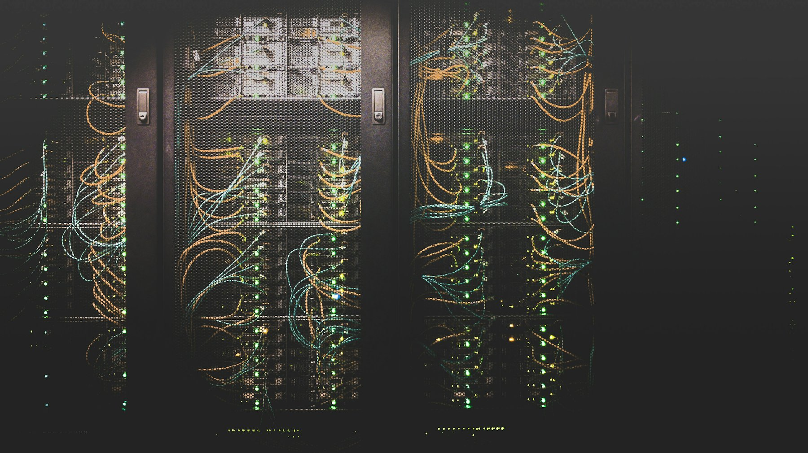

Projekt 01
A weboldalad
lehetne ennél
sokkal
több.
Weboldalakat tervezünk, fejlesztünk és tartunk karban olyan vállalkozásoknak, amelyek nem szeretnének beleolvadni a tömegbe.
SCROLL
Nem weboldalakat készítünk.
Digitális első benyomásokat.
Egy jó weboldal nem attól működik, hogy szép. Attól működik, hogy megállít, bizalmat épít és elindít egy döntést.
SZOLGÁLTATÁSOK
MIÉRT WEB—DECK?
01
0
webes tapasztalat
02
0
elkészített / kezelt projekt
03
24/7
figyelem a működésre
04
0
partner a weboldalad teljes életciklusára
MUNKÁINK
Nem hiszünk a sablonokban.
Mutatjuk, mit csinálunk helyette.
A weboldal nem egy projekt.
Hanem egy folyamatosan működő eszköz.
Frissítések, biztonság, mentések, hibák, technikai problémák. A weboldalad akkor is igényel figyelmet, amikor éppen nem foglalkozol vele.
Weboldal-karbantartás →
WEB CARE
Rendszer felügyelve
Uptime99.98%
Válaszidő<1s
Ne várd meg,
amíg valami elromlik.
A Web-Deck folyamatosan figyel a weboldaladra, hogy neked ne kelljen.
- ✓Rendszeres szoftverfrissítések
- ✓Biztonsági ellenőrzés
- ✓Automatikus mentések
- ✓Hibajavítás
- ✓Teljesítmény-optimalizálás
- ✓Technikai segítség
FOLYAMAT
01
MEGÉRTJÜK
Megismerjük a vállalkozásodat, céljaidat és azt, hogy mit kell elérnie a weboldalnak.
02
MEGTERVEZZÜK
Struktúra, UX, vizuális irány és tartalom.
03
FELÉPÍTJÜK
Gyors és reszponzív technikai megoldásokkal, szilárd alapokon.
04
ÉLETRE KELTJÜK
Animációk, interakciók és finomhangolás.
05
TOVÁBB VISSZÜK
Karbantartás, fejlesztés és folyamatos technikai támogatás.
HA TE IS...
elavult a weboldalad
új vállalkozást indítasz
több ügyfelet szeretnél
webshopot indítanál
nem akarsz technikai problémákkal foglalkozni
szeretnéd végre komolyan venni az online jelenléted
„Végre egy weboldal, ami úgy néz ki, ahogy a vállalkozásunk valójában működik.”
BUILT TO PERFORM.
AWS—CLOUDFLARE—
NEXT.JS—SEO—
PERFORMANCE—SECURITY—
AWS—CLOUDFLARE—
NEXT.JS—SEO—
PERFORMANCE—SECURITY—
RÓLUNK
Kreatív stúdió
és fejlesztői precizitás egy helyen.
4+ éve építünk és tartunk karban weboldalakat olyan vállalkozásoknak, amelyek nem szeretnének beleolvadni a tömegbe. Nem tűnünk el az élesítés után.
Még mindig vannak kérdéseid?
Egy egyszerűbb bemutatkozó oldal 2-3 hét alatt, egy komplexebb webshop 4-8 hét alatt készül el, a tartalom és a visszajelzések gyorsaságától függően.
Ez a projekt méretétől és funkcióitól függ. Egy ingyenes konzultáció után pontos, testreszabott ajánlatot adunk.
Egyedi fejlesztésű megoldásokat építünk, modern felhő-infrastruktúrára (AWS, Cloudflare) alapozva — nem sablonrendszerekre, hanem gyors, biztonságos és skálázható technológiai alapokra.
Igen, weboldal redesign és migráció is a szolgáltatásaink közé tartozik, a tartalom és a SEO-eredmények megőrzésével.
Nem tűnünk el — folyamatos karbantartási csomagokat kínálunk, hogy az oldalad mindig gyors, biztonságos és naprakész maradjon.
Igen, ez az egyik legfontosabb szolgáltatásunk — részletek a Karbantartás szekcióban.
Igen, egyedi fejlesztésű webshopokat is tervezünk és építünk, a termékkezeléstől a fizetési integrációig, modern és biztonságos technológiai alapokon.
KÉSZÍTSÜNK
VALAMI
JOBBAT.
Ha a következő weboldaladnak nemcsak működnie, hanem hatnia is kell, beszéljünk.